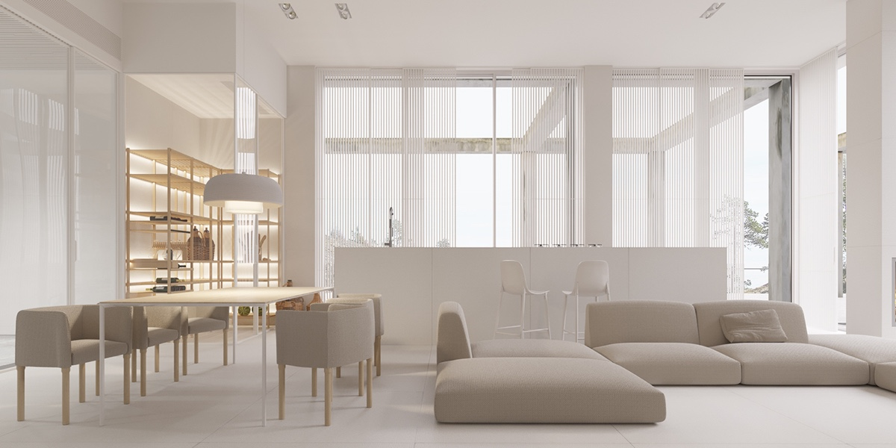
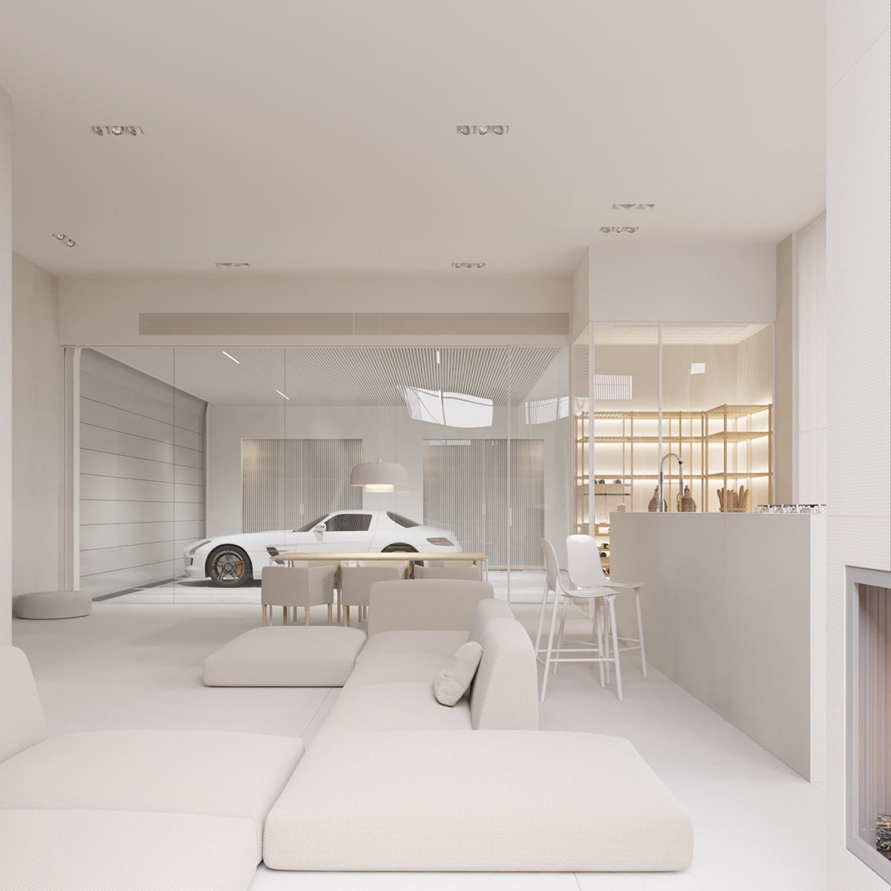
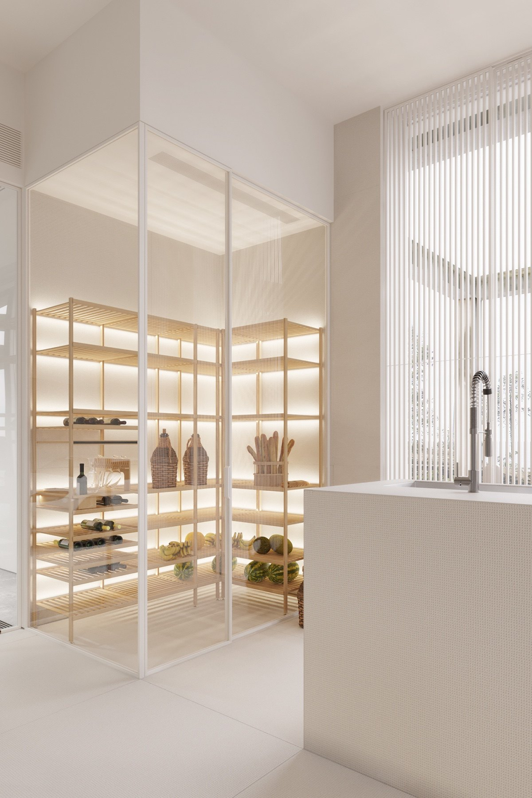
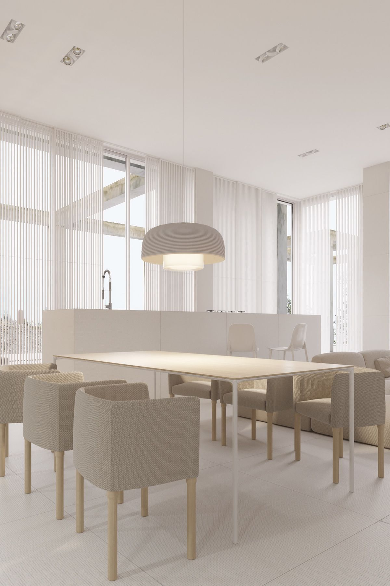

<!DOCTYPE html>
<html lang="en">
    <head>
        <title>Homes Starting a New Beginning</title>
        <link rel="stylesheet" href="styles.css">
    </head>
</html>

    <section class="title">

<H1>Homes Starting a New Beginning</H1> 

</section>

<nav class="navbar">

<a href="index.html">Home</a>
    <a href="Interior2.html">Interior</a>
    <a href="Technology features.html">Technology features</a>
  <a href="Cleaning ai.html">Cleaning ai</a>

</nav>
        <section class="row"></section>

<section class="center">
    
</section>
<section class="row"></section>


<section class="row">
    <section class="col half">

         
    </section>
    <section class="col half">
        <h2>A nice living room enhances your home’s aesthetic, making it a welcoming space for family and friends. 
        <br>It fosters relaxation and social interaction, serving as a hub for gatherings and activities. 
        <br>A well-designed living room can reflect your personal style and create a positive atmosphere, ultimately contributing to your overall well-being. 
        Plus, it can add value to your home, making it more appealing to potential buyers.</h2>
    </section>
</section>
    
<section class="row">
    <section class="col half">

        
    </section>
    <section class="col half">

        <h2>A nice open space in your living room creates a sense of freedom and airiness, allowing for easier movement and flexibility in arrangement. 
            <br>It promotes natural light, making the area feel brighter and more inviting. 
            <br>An open layout encourages social interaction and connection, making it perfect for gatherings. </h2>
    </section>
</section>

   
<section class="room">




        

</section>

<section class="Interior">


    
<h4>A nice pantry enhances your kitchen's organization and functionality, making meal prep easier and more efficient. 
    <br>It provides ample storage for food, spices, and kitchen supplies, helping to reduce clutter in your kitchen. </h4>

    <h4>A nice dining table serves as the centerpiece of your dining area, setting the tone for meals and gatherings. 
        <br>It provides a welcoming space for family and friends to come together, fostering connection and conversation.</h4>

</section>